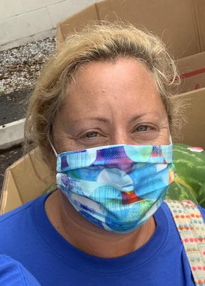

Amy at 50
Happy Birthday!
A few dozen of Amy's friends made a video to commemorate this very special occasion
See "Amy Five-0"
here on Youtube
Or, if the Youtube version doesn't work (they do stuff like that):
watch
this high-resolution version
or
this medium-resolution version
or
this low-resolution version
- if your internet connection sucks
here's more stuff for Amy's 50th Birthday
"Amy's Fiftieth"
- by Margaret Flynn
"Barb's poem for Amy at 50"
- it's a tradition by Barbara Egelhof
share
(upload/view/download) pictures and movies
bit.ly/AmyNewman50Uploads
Y'all come back now, to:
tinyurl.com/amynewman50